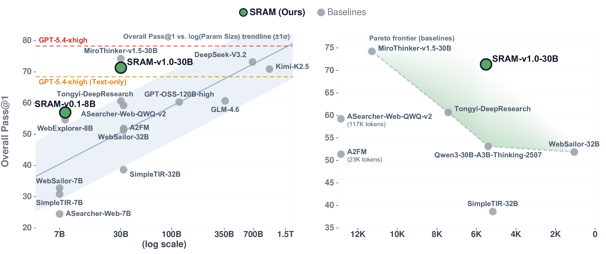
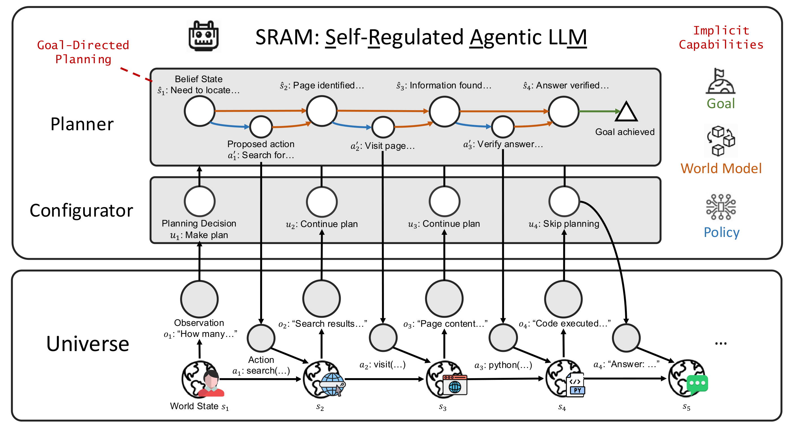
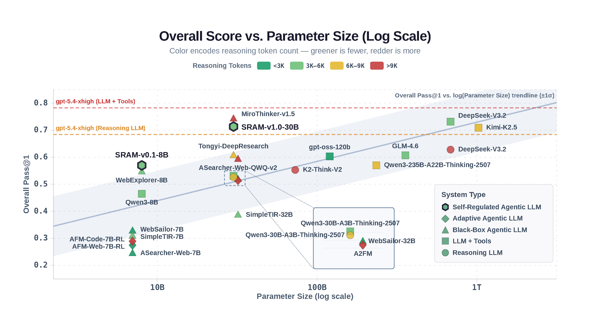
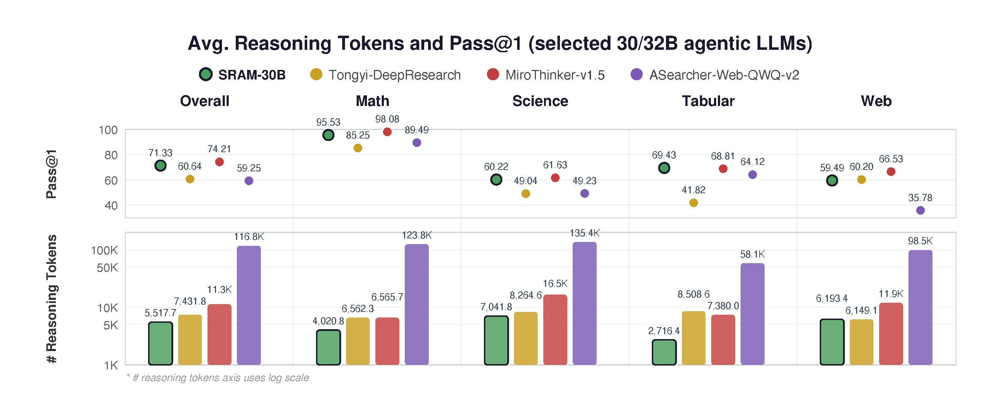

SRAM achieves strong performance relative to its parameter size, while using significantly fewer reasoning tokens than comparable models.

Task Performance
SRAM v1.0 at only 30B parameters competes with systems 20–30× larger, sitting above the scaling trendline across 4 task domains.
Reasoning Efficiency
Up to 25–95% fewer reasoning tokens than comparably sized agentic LLMs. Self-regulation means the model thinks better, not longer.
Large language models (LLMs) are increasingly deployed as interactive agents that reason, use tools, and act over long horizons. However, current agentic LLMs typically rely on black-box chain-of-thought, where planning behavior is expected to emerge implicitly from unconstrained optimization with reinforcement learning (RL). Without control over planning presence, depth, or structure, these systems often rely on scaling reasoning length as the primary mechanism for improvement during training, leading to inefficient token consumption that does not reliably translate to accuracy gains. Prior approaches seek to contain reasoning growth by building capabilities such as effort adaptation, coarse mode-routing, and multi-agent distillation, which fall short of either explicit planning, per-turn regulation, or combination with free-formed reasoning.
We introduce SRAM, an agentic LLM that combines the strengths of existing approaches while enabling more advanced planning features. Specifically, SRAM augments conventional thinking-acting LLMs with an explicit configurator and structured planner as part of its reasoning process. At each turn, the configurator decides whether to plan, continue an existing plan, or act directly; when invoked, the planner constructs explicit plans grounded in predicted future states and controlled planning depth.
These components operate alongside free-form reasoning, separating self-regulation, planning, and execution while preserving end-to-end expressiveness. We realize this framework through supervised data encoding self-regulated planning structure followed by RL for task success, yielding SRAM-v0.1-8B and SRAM-v1.0-30B.
Across mathematical reasoning, scientific problem-solving, tabular data analysis, and web information seeking, SRAM-v0.1-8B and SRAM-v1.0-30B achieve overall Pass@1 competitive with systems at 120–355B and 685B–1T parameters, respectively, while consuming up to 25–95% fewer reasoning tokens than comparably sized agentic LLMs. Analysis shows that RL increases average plan depth by 22.8% while planning frequency grows only 2.0%, suggesting the model learns to plan at longer horizons without overly frequent planning.
SRAM decomposes the agent's action distribution into three explicit, learnable components.
Assesses the current belief state at every turn and decides whether to plan, continue an existing plan, or act directly. Enables per-turn self-regulation of planning presence and depth.
When invoked, constructs explicit plans consisting of proposed actions and predicted future states, grounding subsequent execution in anticipated consequences rather than mere action directives.
Selects and executes actions conditioned on the current belief state and plan. Interacts with tools: web search, web browser, and a Python code sandbox.
SRAM is the first system to combine all seven capabilities for agentic reasoning.
| System Type | Environment Interaction |
Agentic Training |
Free-Form Reasoning |
Per-Turn Regulation |
Explicit Planning |
Next-State Simulative Planning |
Controllable Planning Depth |
|---|---|---|---|---|---|---|---|
| Reasoning LLM | ✗ | ✗ | ✓ | ✗ | ✗ | ✗ | ✗ |
| LLM + Tools | ✓ | ✗ | ✓ | ✗ | ✗ | ✗ | ✗ |
| Black-Box Agentic LLM | ✓ | ✓ | ✓ | ✗ | ✗ | ✗ | ✗ |
| Adaptive Agentic LLM | |||||||
| — Adaptive Effort | ✓ | ✓ | ✓ | ✓ | ✗ | ✗ | ✗ |
| — Coarse Mode-Routing | ✓ | ✓ | ~ | ✗ | ~ | ✗ | ✗ |
| — Multi-Agent Distillation | ✓ | ✓ | ✗ | ✓ | ✓ | ✗ | ✗ |
| SRAM (Ours) | ✓ | ✓ | ✓ | ✓ | ✓ | ✓ | ✓ |
Agent action distribution:
Construct interleaved thinking–acting traces with self-regulated planning structure using two methods: Multi-Module Inference (v0.1) and Plan Reconstruction (v1.0).
Fine-tune open-weight LLMs on the self-regulation data to provide initial configurator and planning capabilities.
Refine the model with GRPO-based RL for task success, coordinating self-regulation, planning, and execution.

Overview of the SRAM architecture. The self-regulated agent augments conventional reasoning-and-acting with an explicit configurator (κ) that dynamically controls planning behavior — deciding whether to make a new plan, continue an existing one, or act directly — at each turn.
Per-benchmark Pass@1 across four task domains. SRAM rows highlighted.
| Model | Size | # Tokens | Overall | Math | Science | Tabular | Web | ||||||||
|---|---|---|---|---|---|---|---|---|---|---|---|---|---|---|---|
| AIME 24 | AIME 25 | MATH 500 | GPQA-D | SuperGPQA | HLE | FinQA | MultiHier | BrowseComp | GAIA | XBench | |||||
| Reasoning LLMs | |||||||||||||||
| GPT-5.4-xhigh | — | 8,810 | 68.4 | 96.4 | 99.4 | 99.8 | 92.2 | 73.5 | 40.8 | 76.5 | 69.0 | 14.8 | 42.0 | 48.2 | |
| LLMs + Tools | |||||||||||||||
| DeepSeek-V3.2 | 685B | 3,012 | 73.2 | 95.1 | 90.7 | 99.0 | 87.2 | 75.0 | 39.6 | 72.0 | 68.2 | 38.1 | 81.3 | 58.5 | |
| Kimi-K2.5 | 1024B | 6,413 | 70.9 | 89.6 | 81.6 | 98.4 | 83.6 | 72.5 | 34.4 | 71.6 | 67.3 | 35.3 | 73.5 | 72.0 | |
| GPT-5.4-xhigh | — | 4,822 | 78.3 | 95.2 | 94.7 | 99.2 | 92.3 | 77.7 | 49.0 | 76.9 | 70.2 | 48.7 | 83.5 | 80.8 | |
| Black-Box Agentic LLMs | |||||||||||||||
| MiroThinker-v1.5 | 30B | 11,295 | 74.2 | 98.9 | 97.2 | 98.2 | 81.2 | 73.7 | 30.0 | 72.7 | 64.9 | 38.6 | 84.5 | 76.5 | |
| Tongyi-DeepResearch | 30B | 7,432 | 60.6 | 89.2 | 92.0 | 74.6 | 60.6 | 54.9 | 31.6 | 45.8 | 37.8 | 36.9 | 67.7 | 76.0 | |
| Self-Regulated Agentic LLMs (Ours) | |||||||||||||||
| SRAM v0.1 8B | 8B | 3,698 | 57.0 | 83.8 | 74.2 | 96.2 | 60.9 | 58.0 | 14.2 | 73.6 | 64.6 | 4.8 | 46.1 | 50.5 | |
| SRAM v1.0 30B | 30B | 5,518 | 71.3 | 96.2 | 91.1 | 99.2 | 77.3 | 73.0 | 30.4 | 73.4 | 65.5 | 22.5 | 76.0 | 80.0 | |
Competitive with 30–32B agentic LLMs and LLM+Tools systems at 120–355B parameters.
Competitive with DeepSeek-V3.2 (685B) and Kimi-K2.5 (1T), using 51.2% fewer tokens than MiroThinker-v1.5.
Self-regulation initialization enables more efficient RL training: higher accuracy with fewer tokens.
Self-regulation SFT reduces token consumption during RL training compared to black-box reasoning.
Self-regulated initialization converges to a higher overall score than training from the base model.
RL increases average plan depth by 22.8% while planning frequency grows only 2.0%.
Black-box RL causes 22.4% context overflow rate; SRAM avoids this entirely.
RL training progress over 400 steps. Without self-regulation structure, RL increases token consumption with diminishing accuracy returns, while the self-regulated model achieves steadily improving accuracy with controlled token growth. OoC % labels show out-of-context rates per checkpoint.

Overall score vs parameter size across all evaluated systems. Marker shape denotes system type; color encodes average reasoning token count per trajectory (greener = fewer, redder = more). Both SRAM models sit above the scaling trend, achieving accuracy competitive with substantially larger systems while using fewer reasoning tokens.

Avg reasoning tokens vs Pass@1 across four 30/32B agentic LLMs, broken down by task category. Bars show average reasoning tokens per query (log scale); dots represent Pass@1. SRAM-30B achieves competitive scores while using significantly fewer tokens — notably 20× fewer than ASearcher-Web-QWQ-v2.
Plan depth analysis of SRAM v1.0 30B before and after 200 RL steps. Left: RL shifts mass from 1-step plans toward 2- and 3+ step plans while the proportion of unplanned turns remains stable, indicating RL deepens planning without increasing frequency. Right: Average plan depth by task category — all categories show consistent increases, with the largest gain in science (32.7%).
If you find this work useful, please cite:
@misc{deng2026sram,
title = {SRAM: A Self-Regulated Agentic LLM for Interactive Reasoning},
author = {Deng, Mingkai and Hou, Jinyu and Neves, Lara and
Pimpalkhute, Varad and Killian, Taylor W. and
Liu, Zhengzhong and Xing, Eric P.},
journal = {arXiv preprint arXiv:xxxxxx},
year = {2026},
doi = {10.48550/arXiv.xxxxxx},
url = {https://arxiv.org/abs/xxxxxx}
}